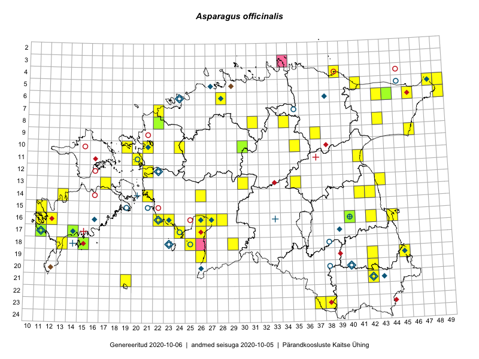

Asparagus officinalis
Uuendatud: 2016-12-08
Kaardile koondatud taksonid: Asparagus officinalis L.

Kaart põhineb 79 kirjel, neist vaatlusi 77 ja eksemplare 2. Taksonit on leitud 44 ruudust.
| Ruut | Vaatleja(d) | Vaatlusaeg | Kirje tüüp | Viide andmebaasikirjele |
|---|---|---|---|---|
| 14-42 | Peedu Saar, Ott Luuk | 2015-06-21 | ruut/ala | vaata PlutoFis |
| 05-49 | Tiit Hallikma, Toomas Kukk | 2015-07-22 | ruut/ala | vaata PlutoFis |
| 05-49 | Tiit Hallikma, Toomas Kukk | 2015-07-22 | punkt | vaata PlutoFis |
| 06-46 | Toomas Kukk, Tiit Hallikma, Meeli Mesipuu | 2015-05-31 | ruut/ala | vaata PlutoFis |
| 06-46 | Tiit Hallikma, Meeli Mesipuu, Toomas Kukk | 2015-05-31 | punkt | vaata PlutoFis |
| 11-41 | Peedu Saar | 2015-08-22 | punkt | vaata PlutoFis |
| 06-49 | Ott Luuk, Hannes Pehlak | 2015-07-21 | ruut/ala | vaata PlutoFis |
| 06-49 | Ott Luuk, Hannes Pehlak | 2015-07-21 | punkt | vaata PlutoFis |
| 16-22 | Indrek Tammekänd, Vilma Kuusk | 2015-08-30 | punkt | vaata PlutoFis |
| 08-34 | Jana-Maria Habicht, Ester Valdvee | 2015-07-31 | ruut/ala | vaata PlutoFis |
| 05-48 | Meeli Mesipuu, Timo Luhamäe | 2015-07-23 | ruut/ala | vaata PlutoFis |
| 06-43 | Eerik Leibak, Thea Kull | 2014-09-11 | ruut/ala | vaata PlutoFis |
| 14-42 | Ott Luuk, Peedu Saar | 2015-06-21 | punkt | vaata PlutoFis |
| 17-24 | Maret Gerz, Leena Gerz | 2015-08-12 | ruut/ala | vaata PlutoFis |
| 17-24 | Maret Gerz, Leena Gerz | 2015-08-12 | punkt | vaata PlutoFis |
| 17-24 | Maret Gerz, Leena Gerz | 2015-08-12 | punkt | vaata PlutoFis |
| 08-34 | Jana-Maria Habicht, Ester Valdvee | 2015-07-31 | punkt | vaata PlutoFis |
| 16-23 | Maret Gerz, Leena Gerz | 2015-08-16 | ruut/ala | vaata PlutoFis |
| 16-23 | Maret Gerz, Leena Gerz | 2015-08-16 | punkt | vaata PlutoFis |
| 16-22 | Maret Gerz, Leena Gerz | 2015-08-16 | punkt | vaata PlutoFis |
| 16-22 | Maret Gerz, Leena Gerz | 2015-08-16 | punkt | vaata PlutoFis |
| 16-22 | Maret Gerz, Leena Gerz | 2015-08-16 | punkt | vaata PlutoFis |
| 13-17 | Kadri Tali | 2016-05-24 | ruut/ala | vaata PlutoFis |
| 17-26 | Meeli Mesipuu | 2015-05-21 | punkt | vaata PlutoFis |
| 05-48 | Timo Luhamäe, Meeli Mesipuu | 2015-07-23 | punkt | vaata PlutoFis |
| 05-41 | Kaili Orav, Silvia Pihu | 2015-06-18 | ruut/ala | vaata PlutoFis |
| 05-41 | Kaili Orav, Silvia Pihu | 2015-06-18 | punkt | vaata PlutoFis |
| 19-45 | Meeli Mesipuu, Thea Kull | 2015-08-19 | punkt | vaata PlutoFis |
| 19-45 | Meeli Mesipuu, Thea Kull | 2015-08-19 | punkt | vaata PlutoFis |
| 16-40 | Maret Gerz, Ott Luuk | 2014-06-25 | ruut/ala | vaata PlutoFis |
| 10-24 | Hanna-Eliisa Luts, Tõnu Ploompuu, Anna-Grete Rebane | 2015-07-19 | ruut/ala | vaata PlutoFis |
| 10-19 | Peedu Saar, Toomas Kukk | 2016-05-12 | punkt | vaata PlutoFis |
| 10-19 | Toomas Kukk, Peedu Saar | 2016-05-12 | ruut/ala | vaata PlutoFis |
| 04-39 | Ott Luuk, Tiit Hallikma | 2016-05-19 | ruut/ala | vaata PlutoFis |
| 15-11 | Meeli Mesipuu | 2016-05-27 | punkt | vaata PlutoFis |
| 04-39 | Tiit Hallikma, Ott Luuk | 2016-05-19 | punkt | vaata PlutoFis |
| 10-21 | Tõnu Ploompuu | 2015-08-21 | ruut/ala | vaata PlutoFis |
| 19-45 | Toomas Kukk, Tiit Hallikma | 2016-06-17 | ruut/ala | vaata PlutoFis |
| 23-38 | Rein Kalamees, Eerik Leibak | 2016-06-16 | punkt | vaata PlutoFis |
| 23-38 | Rein Kalamees, Eerik Leibak | 2016-06-16 | ruut/ala | vaata PlutoFis |
| 21-42 | Sander Laherand, Ott Luuk | 2016-06-16 | ruut/ala | vaata PlutoFis |
| 21-19 | Silvia Pihu | 2015-07-01 | ruut/ala | vaata PlutoFis |
| 21-19 | Silvia Pihu | 2015-07-01 | punkt | vaata PlutoFis |
| 20-42 | Peedu Saar, Tarmo Niitla | 2016-06-16 | punkt | vaata PlutoFis |
| 16-44 | Maret Gerz, Liina Oja | 2016-06-13 | ruut/ala | vaata PlutoFis |
| 16-44 | Liina Oja, Maret Gerz | 2016-06-13 | punkt | vaata PlutoFis |
| 23-37 | Maret Gerz, Liina Oja | 2016-06-15 | ruut/ala | vaata PlutoFis |
| 23-37 | Maret Gerz, Liina Oja | 2016-06-15 | punkt | vaata PlutoFis |
| 10-19 | Liina Oja, Rein Kalamees | 2016-07-07 | punkt | vaata PlutoFis |
| 12-21 | Liina Oja, Rein Kalamees | 2016-07-05 | punkt | vaata PlutoFis |
| 14-41 | Eeva-Maria Jeletsky, Tarmo Niitla | 2016-07-21 | punkt | vaata PlutoFis |
| 14-41 | Eeva-Maria Jeletsky, Tarmo Niitla | 2016-07-21 | ruut/ala | vaata PlutoFis |
| 20-42 | Tarmo Niitla, Peedu Saar | 2016-06-16 | ruut/ala | vaata PlutoFis |
| 14-21 | Mari Reitalu, Oliver Parrest | 2016-07-04 | ruut/ala | vaata PlutoFis |
| 10-35 | Toomas Kukk, Tiit Hallikma | 2016-07-25 | punkt | vaata PlutoFis |
| 14-26 | Maret Gerz, Liina Oja | 2016-07-08 | ruut/ala | vaata PlutoFis |
| 16-26 | Maret Gerz, Aat Sarv | 2016-07-04 | punkt | vaata PlutoFis |
| 11-20 | Aat Sarv, Maret Gerz | 2016-07-07 | ruut/ala | vaata PlutoFis |
| 16-26 | Aat Sarv, Maret Gerz | 2016-07-04 | ruut/ala | vaata PlutoFis |
| 18-29 | Aat Sarv, Raivo Kalle | 2016-07-20 | punkt | vaata PlutoFis |
| 04-39 | Thea Kull, Toomas Kukk | 2016-09-05 | punkt | vaata PlutoFis |
| 09-37 | Mari Reitalu, Triin Reitalu | 2016-07-11 | ruut/ala | vaata PlutoFis |
| 16-27 | Tiit Hallikma, Tõnu Ploompuu | 2016-06-20 | ruut/ala | vaata PlutoFis |
| 14-21 | Mari Reitalu, Oliver Parrest | 2016-07-04 | punkt | vaata PlutoFis |
| 19-45 | Tiit Hallikma, Toomas Kukk | 2016-06-17 | punkt | vaata PlutoFis |
| 16-27 | Tiit Hallikma, Tõnu Ploompuu | 2016-07-20 | punkt | vaata PlutoFis |
| 16-27 | Tiit Hallikma, Tõnu Ploompuu | 2016-07-20 | punkt | vaata PlutoFis |
| 13-17 | Peedu Saar, Ott Luuk | 2016-08-29 | ruut/ala | vaata PlutoFis |
| 13-30 | Tõnu Ploompuu, Hannes Pehlak, Marko Veinbergs | 2016-07-21 | ruut/ala | vaata PlutoFis |
| 16-12 | Mari Reitalu, Triin Reitalu | 2016-07-01 | punkt | vaata PlutoFis |
| 14-13 | Toomas Kukk, Meeli Mesipuu, Mari Reitalu | 2016-10-06 | ruut/ala | vaata PlutoFis |
| 08-31 | Peedu Saar, Toivo Sepp | 2016-07-18 | punkt | vaata PlutoFis |
| 13-17 | Ott Luuk, Peedu Saar | 2016-08-29 | punkt | vaata PlutoFis |
| 13-35 | Ott Luuk, Hannes Pehlak | 2016-07-22 | ruut/ala | vaata PlutoFis |
| 08-31 | Toivo Sepp, Peedu Saar | 2016-07-18 | ruut/ala | vaata PlutoFis |
| 21-42 | Ott Luuk, Sander Laherand, Susanna Vain | 2016-06-16 | punkt | vaata PlutoFis |
| 07-22 | Marju Erit | 2015-05-01 | ruut/ala | vaata PlutoFis |
| 10-30 | Ott Luuk | 2014-06-10 | eksemplar | vaata PlutoFis |
| 10-30 | Ott Luuk | 2014-06-10 | eksemplar | vaata PlutoFis |